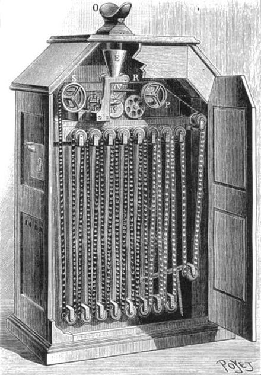
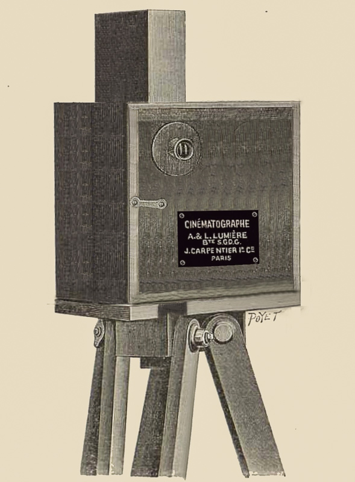

No dia 19 de março de 1895, os irmãos Auguste e Louis Lumière filmavam uma cena utilizando pela primeira vez o seu mais recente invento patenteado: o cinematógrafo. A cena em questão daria origem aquele que é considerado o primeiro filme de cinema já feito: La Sortie de l’Usine Lumière à Lyon. O filme dos Irmãos Lumière, segundo os historiadores do cinema, inaugura o cinema como forma de comunicação.
A Chegada do Trem na Estação, é um filme francês de 1895, gravado por Louis Lumière e por Auguste Lumière. Foi um dos primeiros filmes a serem apresentados publicamente pelos irmãos Lumière, na cave do Boulevard des Capucines em Paris, em 28 de dezembro do mesmo ano. No dia 6 de janeiro de 1896, foi exibido Salão Indiano (uma saleta nos fundos de um café), naquela que entrou para a história como a primeira exibição pública comercial de um filme. O bilhete custou 1 franco.
Cinetoscópio e Cinematógrafo
A captura da “imagem-movimento” foi possível a partir de 1889 com a criação do cinetoscópio por William Dickson, assistente do cientista e inventor americano Thomas Edison. Esse invento e os modelos que o sucederam na década seguinte contribuíram para o desenvolvimento do cinema tal como o compreendemos hoje, ou seja, a arte cinematográfica. O cinema, portanto, teve origem no cinetoscópio, que, todavia, não projetava as imagens em telões. O espectador do cinetoscópio tinha de observar (durante um tempo-limite de 15 minutos) as imagens no interior de uma câmara escura por meio de um orifício em que colocava um dos olhos. Nesse sentido, a experiência visual proporcionada pelo cinetoscópio não podia ser feita coletivamente. Edison não chegou a patentear o invento, o que abriu portas para outros inventores, sobretudo da Europa, aperfeiçoarem o modelo.
No ano de 1892, o francês Léon Bouly conseguiu, a partir do cinetoscópio, desenvolver o cinematógrafo, um modelo que conseguia gravar e projetar a luz das imagens-movimento em tela, em quadros por segundo. Contudo, Bouly não possuía dinheiro para registrar a patente do invento. O cinematógrafo acabou por ser patenteado pelos irmãos Lumière, que passaram, a partir de 1895, a fazer várias produções cinematográficas de pequena capacidade e a exibi-las em sessões especiais para isso.